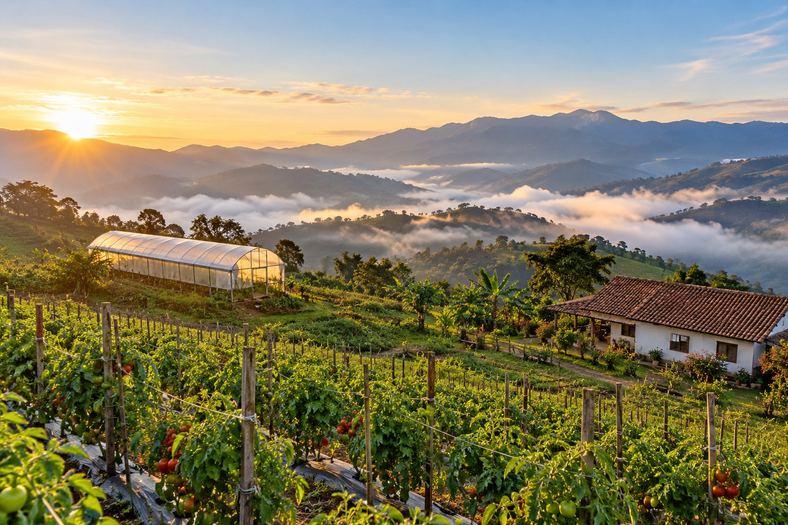
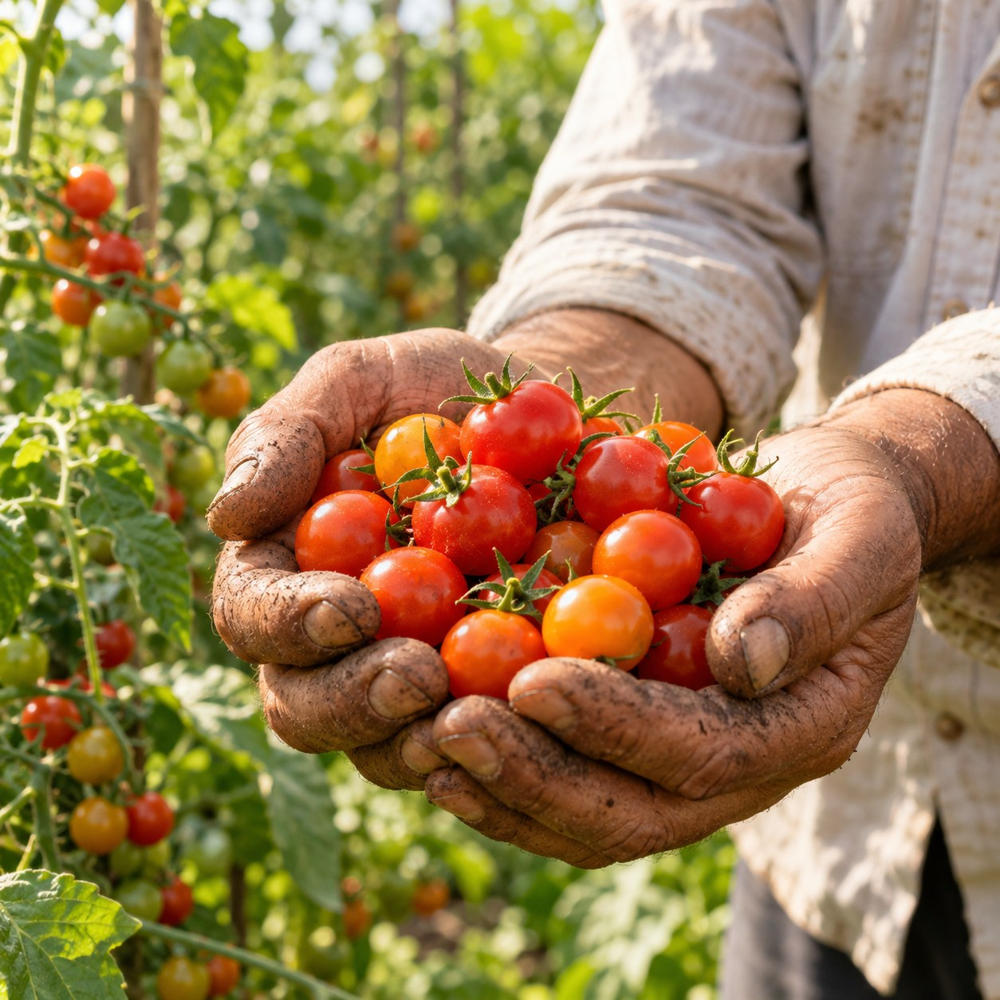

SiembraCo
Finca asignada

Buenas prácticas agrícolas verificadas · 3 sepFinca La Esperanza
Fresno, Tolima · 1.450 m

Ernesto Ramírez
Agricultor aliado · 14 cultivos
Lote 14 La Esperanza 14 – 18 oct Bogotá
Tu siembra virtual
Precio fijado- Producto
- Tomate cherry orgánico
- Cantidad contratada
- 3,0 kg
- Precio pagado
- $ 48.000 COP
- Entrega estimada
- 15 – 19 oct · Bogotá
Precio y cantidad fijados al comprar en la plataforma SiembraCo; la cosecha real no los cambia.
Riego por goteoahorra agua
Cadena cortasin intermediarios
Sin agroquímicosde síntesis
Información sanitaria validada por Legal SiembraCo · normativa INVIMA · rev. 15 sep 2026